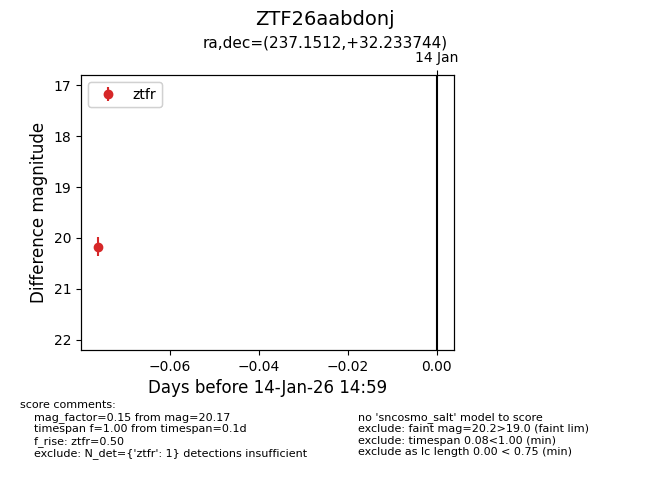
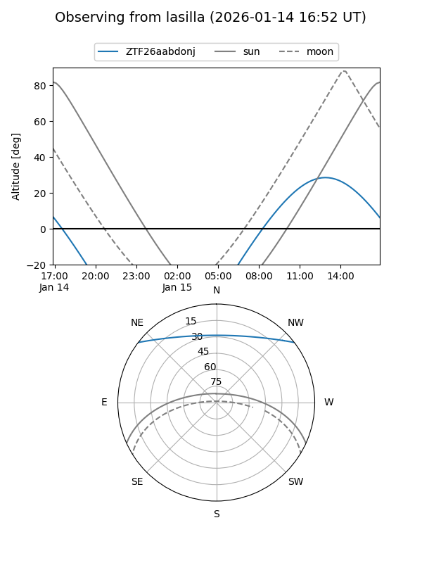
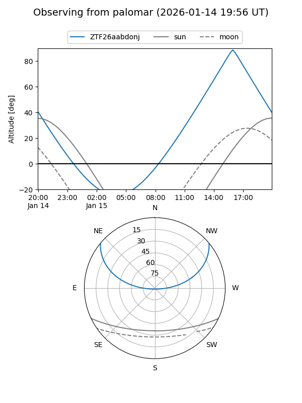

ZTF26aabdonj
Target ZTF26aabdonj at 2026-01-14 15:00
Aliases and brokers:
FINK: link
Lasair: link
ALeRCE: link
alt names
ZTF26aabdonj (ztf,fink_ztf)
Coordinates:
equatorial (ra, dec) = 237.1512,+32.23374
equatorial (HMS+DMS) = 15:48:36.30,+32:14:01.48
galactic (l, b) = (51.5164,+51.45098)
Flags:
Photometry:
last ztfr=20.17
1 ztfr detections
Lightcurve

Visibility


Additional plots